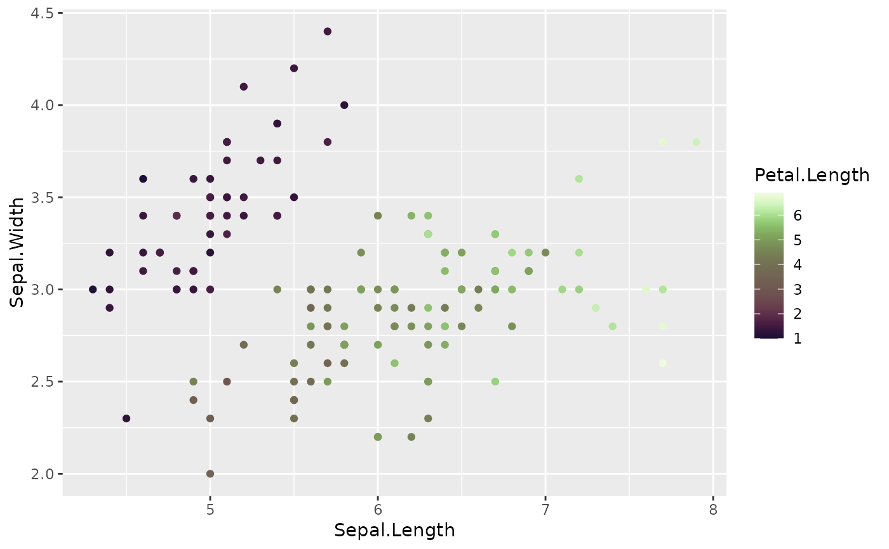

R/ggplot2_scales_continuous.R
ggplot2-scales-continuous.RdThese functions provide the option to use continuous palettes along with the
ggplot2 package. It goes without saying that it requires ggplot2 to work.
scale_colour_paletteer_c(palette, direction = 1, ...) scale_color_paletteer_c(palette, direction = 1, ...) scale_fill_paletteer_c(palette, direction = 1, ...)
| palette | Name of palette as a string. Must be on the form packagename::palettename. |
|---|---|
| direction | Either |
| ... | Arguments to pass on to |
A ScaleContinuous object that can be added to a ggplot object
Available package/palette combinations are available in the data.frame
palettes_c_names.
if (require('ggplot2')) { ggplot(iris, aes(x = Sepal.Length, y = Sepal.Width, colour = Petal.Length)) + geom_point() + scale_colour_paletteer_c("scico::tokyo") }